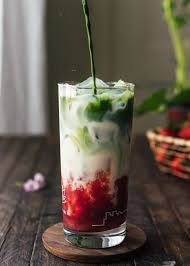

Tempat yang nyaman untuk berdiskusi sambil menikmati berbagai pilihan
makanan dan minuman kekinian. Atmosfer yang santai dan penuh inspirasi
untuk berbagi ide-ide kreatif.
Menu
Iced Coffee
Iced Coffee dengan santan dan gula aren

Strawberry Matcha Latte
Matcha jepang dengan buah strawberry segar
Tahu Cripsy
Potongan tahu yang digoreng dengan tepung rempah pilihan